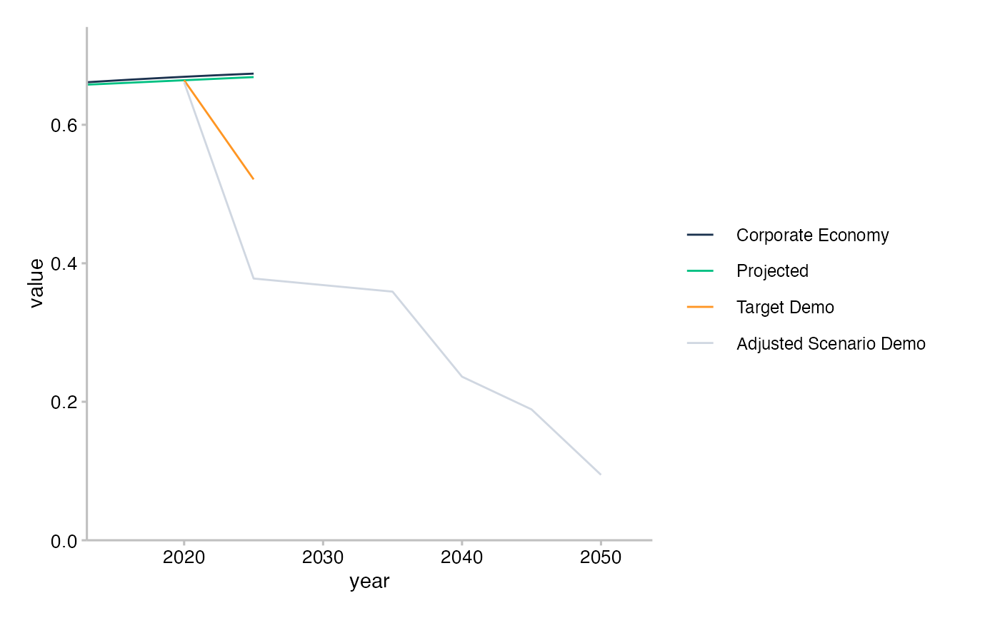
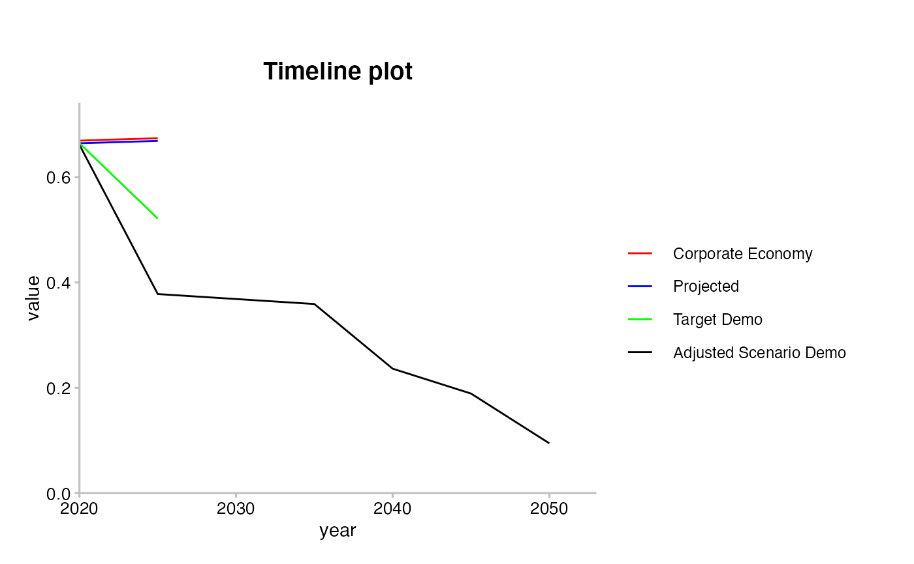

We are exploring different interfaces before release. We are keen to hear
feedback from beta-testers like you. Please try these alternative interfaces
and let us know which one you prefer. The main difference between them is if
and how they allow recoding the values of line_name, which become the
labels of the plot legend:
plot_timelineY()defaults to recodingline_nameto title case, and allows custom recoding via a data frame passed to the argumentspecs.
plot_timelineY(data, specs = timeline_specs(data))
Arguments
| data | Data frame like the output of |
|---|---|
| specs | Data frame containing order of lines, their labels and colour names from the r2dii_colours palette. |
Value
An object of class "ggplot".
See also
Examples
library(ggplot2) library(dplyr) # `plot_timelineY()` ------------------------------------------------------- data <- sda %>% filter(sector == "cement") %>% prep_timelineY() plot_timelineY(data)# Customize as usual with ggplot2 plot_timelineY(data) + scale_colour_manual(values = c("red", "blue", "green", "black")) + labs(title = "Timeline plot")#> #># Customize `line_name` via a data frame passed to `specs` # styler: off custom <- tribble( ~line_name, ~label, ~hex, "projected", "Proj.", "#4a5e54", "corporate_economy", "Corp. Economy", "#a63d57", "target_demo", "Target (demo)", "#78c4d6", "adjusted_scenario_demo", "Adj. Scenario (demo)", "#f2e06e", ) # styler: on plot_timelineY(data, specs = custom)